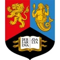
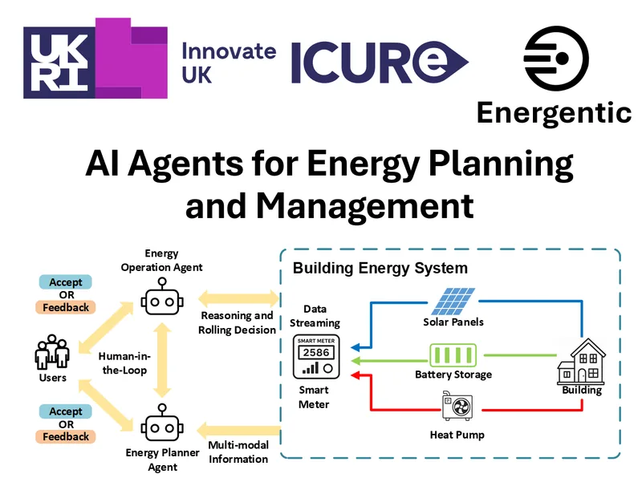
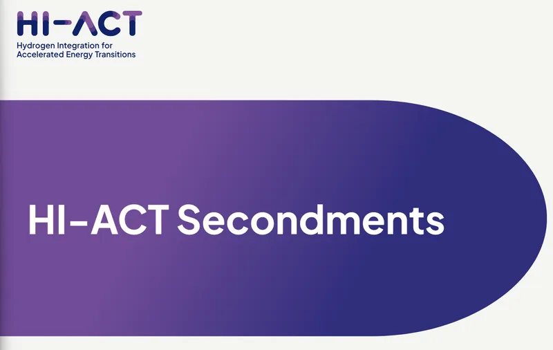
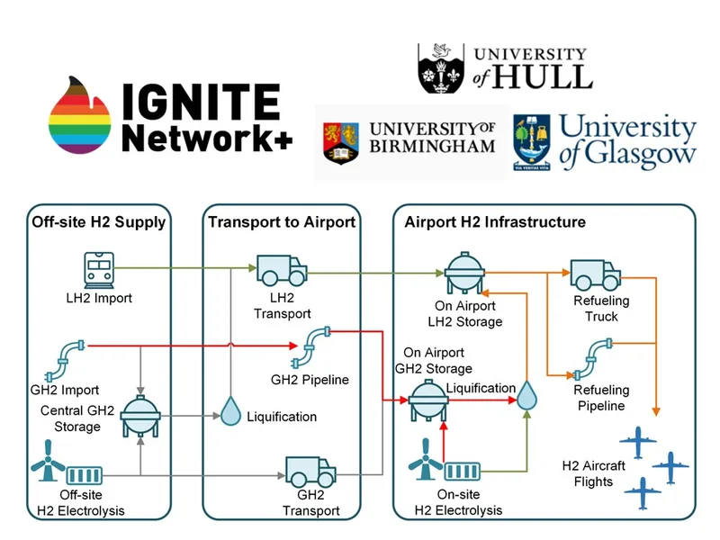

About Me
Research Lead (DAIM, University of Hull) · AI for Engineering Science · Founder of Energentic AI · RAEng Global Talent Awardee
I am a Lecturer and Research Lead at the Centre of Excellence for Data Science, Artificial Intelligence and Modelling (DAIM), University of Hull (GitHub page: daimcentre.github.io), where I lead research strategy and interdisciplinary initiatives in AI for Engineering.
Beyond research, I am passionate about building research capability. I enjoy connecting frontier AI with real-world engineering challenges, helping researchers develop ambitious ideas, competitive funding proposals and impactful collaborations across academia and industry.
I lead the MSc AI for Engineering programme and designed its flagship module, AI-Driven Optimisation and Control, bringing reinforcement learning, agentic AI and modern AI methods into engineering education.
I am also the founder of Energentic AI, an AI service translating research into modular Agent-as-a-Service solutions for engineering decision intelligence, with applications in forecasting, optimisation and operational support.
I actively welcome collaborations with researchers, industry, start-ups and public-sector organisations interested in AI for Engineering, AI for Science, intelligent infrastructure, digital twins, optimisation, autonomous systems and research commercialisation.
Research Vision
AI is transforming how scientific knowledge is created. My long-term goal is to build Agentic Engineering Science: autonomous systems capable of conducting engineering analysis, design, optimisation and decision-making collaboratively with humans.
Through foundation models, multi-agent systems and engineering simulation, I aim to develop AI researchers and AI engineers that accelerate innovation in energy, manufacturing and critical infrastructure.
I am particularly interested in trustworthy AI systems that combine model predictive control, reinforcement learning and human-in-the-loop decision support for complex engineering infrastructure.
Core research themes:
- Agentic Engineering Science
- Autonomous scientific agents
- AI optimisation and control
- Trustworthy LLM multi-agent systems
- Engineering decision intelligence
- Energy infrastructure electrification and resilience
- Offshore renewables and hydrogen systems
- Power systems, microgrids and transport electrification
Interested in collaborating? Visit my research topics or contact me with: "I am interested in [topic] and would like to explore a collaboration."
Experience
University of Hull
Research Lead for DAIM
Lead research strategy for the Centre of Excellence for Data Science, Artificial Intelligence, and Modelling (DAIM), fostering interdisciplinary collaboration across AI, engineering, mathematics, medical and physical sciences, while strengthening industrial partnerships, commercialisation pathways, and knowledge exchange for staff and postgraduate researchers.
Data Science, Artificial Intelligence and Modelling Centre · daimcentre.github.io
Lecturer (Assistant Professor) in AI and Data Science
Centre of Excellence for Data Science, Artificial Intelligence, and Modelling (DAIM). Developed the core module AI for Optimal Control for the MSc AI for Engineering variant programme.
Postgraduate Research Director for DAIM
Liaises with the Faculty PGR management and Doctoral College, oversees PGR applications, investigates student cases, and enhances the postgraduate research experience.
Founder & Entrepreneurial Lead
Energentic AI
AI-driven agentic energy management platform pioneering modular Agent-as-a-Service solutions for forecasting, optimisation, and control in energy systems. Innovate UK ICURe programme for commercialisation.

Seconded Researcher
University of Birmingham
Birmingham Energy Institute. Modelling hydrogen and electric demand at airports for UK decarbonised aviation.
Education
Brunel University of London
PhD in Electronics and Electrical Engineering
2021 – 2023
Cranfield University
PhD Researcher in Energy and Power
2019 – 2021 · transferred to Brunel University London
The University of Edinburgh
MRes in Energy Systems
2018 – 2019
Shandong University
BEng in Energy and Environmental System Engineering
2014 – 2018
Selected Publications
AgentRadio: Passive Awareness for Long-Horizon Multi-Agent Collaboration
arXiv:2607.28430, 2026
An asynchronous message-passing layer for coding-agent harnesses that keeps agents passively aware during long-horizon codebase-understanding tasks; four AgentRadio-organized agents resolve 62.1% of SWE-Atlas QnA tasks.
Beyond Rule-Based Workflows: An Information-Flow-Orchestrated Multi-Agents Paradigm via Agent-to-Agent Communication
arXiv:2601.09883, 2026
An information-flow-orchestrated paradigm with a dedicated orchestrator coordinating agents via A2A; on GAIA it achieves 63.64% pass@1 accuracy, outperforming OWL by 8.49 points.
SimuGen: Multi-modal Agentic Framework for Constructing Block Diagram-Based Simulation Models
NeurIPS 2025 workshop on Scaling Environments for Agents
A multimodal agent framework that enables accurate and interpretable Simulink code generation by combining visual diagrams with domain-specific expertise.
Anemoi: A Semi-Centralized Multi-agent Systems Based on Agent-to-Agent Communication MCP server from Coral Protocol
NeurIPS 2025 Workshop on Bridging Language, Agent, and World Models for Reasoning and Planning
A semi-centralized multi-agent system enabling structured, real-time agent-to-agent collaboration; on GAIA it reaches 52.73% accuracy, surpassing OWL by +9.09%.
Funded Projects

Energentic: AI-Driven Agentic Energy Management for Battery Storage Systems

Modelling Hydrogen and Electric Demand at Airports for UK Decarbonised Aviation

Net-Zero Emissions Aviation: Developing Hydrogen Energy Infrastructure at Airports
Tech Talks, Blogs & Media
University of Hull ECR Research and Knowledge Exchange Excellence Award 🏆 EXCELLENCE AWARD
Innovate UK Feature: TMF AI & ICURe Journey 📰 MEDIA FEATURE
Invited Speaker, Clean Power Summit 2030 🎤 INVITED SPEAKER
Energising Innovation: Dr Zekun Guo's Path to Impact 📰 MEDIA FEATURE
From Models to Agents: LLM-Driven Renewable Energy Systems 🏆 AWARD WINNER
Agentic AI Energy Management: LLM-Enhanced Decision-Making in Battery Energy Systems
Bridging Minds and Machines: Agents with Human-in-the-Loop
Teaching
MSc Data Science and Artificial Intelligence, postgraduate level:
Applied Artificial Intelligence (Module 771767)
Builds on foundational AI concepts to prepare students for dissertation-level research. Topics include classification revisited, deep learning, applications to real-world problems, cognitive bias, and implications for equality.
Research and Application in AI and Data Science (Module 771765)
A dual-theme module exploring how AI and Data Science apply to real-world contexts such as sustainability, healthcare, social responsibility, and the natural environment. Students develop their own research proposal to tackle a genuine research project, drawing from these experiences to identify questions and limitations.
AI and Data Science Research Project (Module 771764)
Students plan and work independently on a complex research-based problem, and report on the aims, methods, and outcomes of their scientific investigation.
MSc AI for Engineering variant programme (core module):
AI for Optimal Control (Module 772220) [GitHub]
Covers control methods, model predictive control, and deep reinforcement learning applications in engineering. Integrates cutting-edge AI technologies into engineering practices to solve real-world industrial challenges.